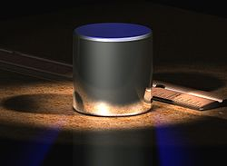

Es una magnitud utilizada para medir la cantidad de materia contenida en un cuerpo. Este concepto es uno de los más antiguos en la historia de la física, estimándose unos 7 mil años de antigüedad.
Cabe destacar que la masa y el peso son conceptos diferentes, ya que Newton explica que el peso es proporcional a la masa.
Formulas: